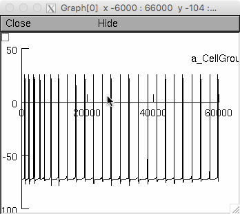
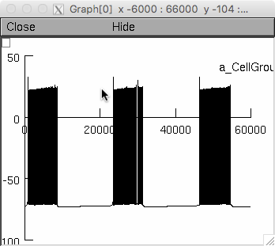

This is the README for models associated with the paper: Gorin M, Tsitoura C, Kahan A, Watznauer K, Drose DR, Arts M, Mathar R, O'Connor S, Hanganu-Op (2016) Interdependent Conductances Drive Infraslow Intrinsic Rhythmogenesis in a Subset of Accessory Olfactory Bulb Projection Neurons. J Neurosci 36:3127-44 These files were contributed by Simon O'Connor. These models were originally developed under neuroConstruct from which these NEURON files were generated. Running under NEURON (original platform was linux however mac and mswin also work): ----------------------------------------------------------------- You can run by autolaunching from ModelDB or downloading and extracting this archive, and then compiling the mod files, and running mosinit.hoc. For more details on this procedure see the help page: https://senselab.med.yale.edu/ModelDB/NEURON_DwnldGuide.html Pressing the button to produce the (top of) Figure 10Hii simulation takes about 2 1/2 minutes on a 2012 MacBook Pro and should generate a figure that looks like this:  If you click on the button to produce the (top of) Figure 10Hiii button also takes about 2 1/2 minutes and should generate a graph like this: 